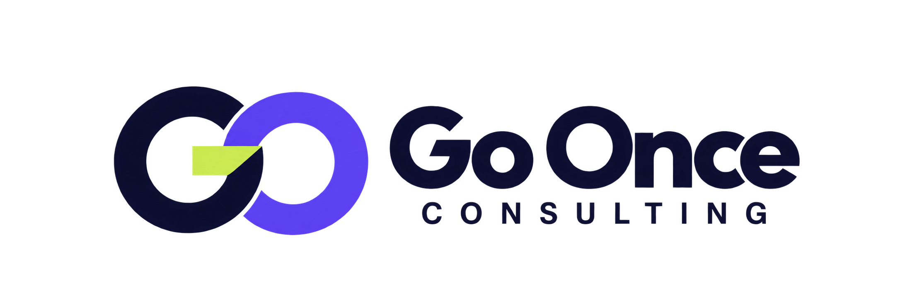

OPERACIÓN DIARIA
Trabajo repetido a mano
Copiar datos, perseguir tareas o rehacer pasos que podrían simplificarse.

Empezar mi consultaGO ONCE DIAGNOSE · PARA AUTÓNOMOS Y PEQUEÑOS NEGOCIOS
Analizamos contigo un proceso real y te ayudamos a priorizar mejoras antes de invertir en tecnología.
TU NEGOCIO · TU CONTEXTO · TU SIGUIENTE PASO
En una conversación guiada revisamos un proceso importante para ti: qué lo inicia, qué pasos tiene, dónde se retrasa y qué herramientas intervienen.
No hace falta tener conocimientos técnicos ni decidir de antemano si necesitas automatización o inteligencia artificial. El objetivo es entender el trabajo y valorar opciones con criterio.
Conoce los entregablesPUNTO DE PARTIDA
Elegimos contigo un proceso concreto para que el análisis termine en pasos comprensibles, no en una lista genérica de herramientas.
Copiar datos, perseguir tareas o rehacer pasos que podrían simplificarse.
Solicitudes, clientes o trabajos cuyo estado cuesta encontrar y actualizar.
Decisiones y datos repartidos entre conversaciones, documentos y aplicaciones.
EL RESULTADO DEL DIAGNÓSTICO
GO ONCE DIAGNOSE· PARA CUALQUIER SECTOR
El diagnóstico tiene valor por sí mismo. Puedes usar sus conclusiones sin contratar una implantación posterior.
Empezar mi consultaHECHOSSUPUESTOSRECOMENDACIONES
ALCANCE TRANSPARENTE
Duración, dedicación que te pediremos y precio se acuerdan contigo antes de reservar. No empieza ningún trabajo sin tu aceptación.
GO ONCE DIAGNOSE
Recibes el mapa, las prioridades y la recomendación aunque decidas no contratar ningún trabajo adicional.
Resolver tus dudasGO ONCE BUSINESS
Si el mismo reto aparece en un sector profesional, podrá estudiarse una solución más específica. Cada alcance requerirá validación y una propuesta propia.
Ver cómo se desarrollaGO ONCE BUSINESS · RUTA DE VALIDACIÓN
Primero comprobamos que la necesidad existe y merece resolverse. Solo después se define y aprueba un posible producto vertical.
Los verticales están en exploración; aún no son productos disponibles.
Go Once Diagnose revisa contigo un proceso concreto de tu negocio.
Mapa · prioridades · recomendaciónComprobamos si el reto se repite en profesionales del mismo sector.
Cada negocio conserva su contextoConversamos con profesionales para entender frecuencia, impacto y alternativas.
Sin asumir que todos necesitan lo mismoPreparamos alcance, hipótesis, coste, riesgos y criterios de éxito.
Revisión y aprobación humanaSolo con el alcance aprobado se prepara una prueba inicial y se recogen comentarios.
Continuar · ajustar · detenerGo Once Business se ofrece si la evidencia y la decisión comercial lo respaldan.
Sin prometer lanzamientoEMPIEZA POR TU ACTIVIDAD
Elige tu sector para ver posibles líneas de mejora. No hace falta que sepas qué solución necesitas.
El sector orienta estas ideas generales. No indica que exista un producto específico ni que todas apliquen a tu negocio.
IDEAS PARA VALORAR
Orientación general a partir del sector elegido; no es un diagnóstico ni afirma que exista un problema en tu negocio. Valida cada idea antes de aplicarla.
ACOMPAÑAMIENTO Y CRITERIO
RESPUESTAS DIRECTAS
Alcance y condiciones claros para valorar si el diagnóstico encaja contigo.
Es una revisión guiada de un proceso concreto, seguida de un mapa sencillo, una priorización de oportunidades y una recomendación escrita del siguiente paso. No es una auditoría legal, financiera ni de seguridad.
Antes de reservar recibirás el alcance, la dedicación estimada para ti, el plazo de entrega y un precio cerrado. Decides si aceptas; no empezamos sin tu conformidad.
Solo una descripción del proceso que quieras revisar y ejemplos generales de cómo se desarrolla. No compartas contraseñas, datos de clientes ni información sensible; te indicaremos si hace falta algún material adicional.
Sí. El mapa del proceso, las prioridades y la recomendación forman el resultado del diagnóstico. Cualquier diseño o implantación posterior se plantea aparte y solo si tú quieres.
Antes de aceptar, recibirás el nombre de quien llevará el análisis y una descripción verificable de su experiencia relevante para tu caso. Así podrás decidir con esa información.
No. Puede que la mejor opción sea aclarar un proceso, ajustar una herramienta que ya utilizas o no cambiar nada por ahora.
SIGUIENTE PASO
Selecciona tu sector y prepara una consulta breve. Antes de empezar, recibirás el alcance y las condiciones para decidir con tranquilidad.
Empezar mi consulta¿Prefieres escribir directamente? contact@goonceconsulting.com.
Se abrirá un borrador en tu aplicación de correo.
Lo revisas y lo envías solo si estás de acuerdo.